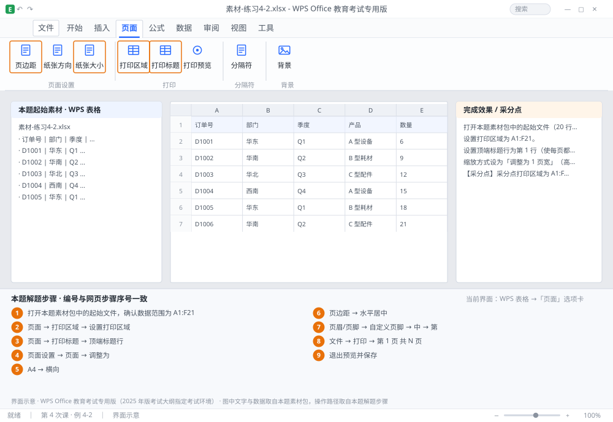

完成比对文档 · 例 4-2
打印设置：打印区域 + 顶端标题行 + 1 页宽 + 页脚「第 X 页 共 Y 页」 ｜ 第 4 次课 / WPS 表格 ｜ 网页：实操-表格1.html ｜ 考试环境：WPS Office 教育考试专用版（2025 年版考试大纲指定考试环境）
用途 本页按修订后的题目要求与解题步骤生成，是交卷自查的结果基准：
逐项列出每一步应出现的可复核结果，配合模拟操作截图与解题结果文件使用。
它不是素材包的一部分，不会预置答案动作；起始素材仍从本题素材包下载。
一、本题起始素材包
目录：练习素材/练习4-2-打印区域与标题行/ ｜
下载包：练习素材/下载/练习4-2-打印区域与标题行.zip
二、题目要求
- 打开本题素材包中的起始文件（20 行销售数据，A1:F21）。
- 设置打印区域为 A1:F21。
- 设置顶端标题行为第 1 行（使每页都有表头）。
- 缩放方式设为「调整为 1 页宽」（高度不限）。
- 纸张 A4 横向，页边距上下左右均 1.5 厘米。
- 页脚居中显示「第 X 页 共 Y 页」，使用页码与总页数域。
- 进入打印预览确认共几页、每页是否都有表头。
- 保存为 学号-姓名-练习4-2.xlsx。
三、解题步骤（编号与下方核对表、截图编号一致）
- 打开本题素材包中的起始文件，确认数据范围为 A1:F21。
- 设打印区域。选中 A1:F21 →「页面」→「打印区域」→「设置打印区域」。设定后区域外会出现灰色虚线。
- 设顶端标题行。「页面」→「打印标题」→ 在「顶端标题行」输入框里点右侧的折叠按钮 → 用鼠标点第 1 行的行号 → 框内显示 $1:$1 → 确定。
- 设缩放。同一「页面设置」对话框 →「页面」选项卡 → 缩放选「调整为」→ 宽 1 页、高留空（或填 0，表示自动）。
- 设纸张与方向。同对话框 → 纸张大小「A4」→ 方向「横向」。
- 设页边距。切到「页边距」选项卡 → 上、下、左、右均填 1.5 → 勾选「水平居中」。
- 设页脚。切到「页眉/页脚」选项卡 →「自定义页脚」→ 光标放进「中」框 → 输入「第 」→ 点「插入页码」按钮 → 输入「 页 共 」→ 点「插入总页数」按钮 → 输入「 页」→ 确定。生成的代码是 &[页码] 与 &[总页数]，不要手打数字。
- 预览。「文件」→「打印」（Ctrl+P）→ 右侧预览里翻页，确认：①每页顶部都有表头；②页脚显示「第 1 页 共 N 页」；③所有列都在一页宽内。
- 退出预览并保存。Esc 返回 → 保存为 学号-姓名-练习4-2.xlsx。
四、完成效果 / 采分点
采分点打印区域为 A1:F21 · 顶端标题行为 $1:$1 · 缩放为 1 页宽 · 纸张 A4 横向 · 页边距四边 1.5 · 页脚为页码+总页数域且居中 · 预览中每页均有表头
五、逐项完成核对表
| 步骤 | 关键操作路径 | 应出现的结果（可复核） |
|---|
| 1 | 打开本题素材包中的起始文件，确认数据范围为 A1:F21 | A1:F21 |
| 2 | 设打印区域 | A1:F21、「页面」、「打印区域」、「设置打印区域」 |
| 3 | 设顶端标题行 | 「页面」、「打印标题」、「顶端标题行」、1 行 |
| 4 | 设缩放 | 「页面设置」、「页面」、「调整为」、1 页 |
| 5 | 设纸张与方向 | 「A4」、「横向」 |
| 6 | 设页边距 | 「页边距」、「水平居中」 |
| 7 | 设页脚 | 「页眉/页脚」、「自定义页脚」、「中」、「第 」、「插入页码」 |
| 8 | 预览 | 「文件」、「打印」、「第 1 页 共 N 页」 |
| 9 | 退出预览并保存 | 学号-姓名-练习4-2.xlsx |
六、模拟操作截图

界面示意 · WPS Office 教育考试专用版 · 橙色编号与本题解题步骤序号一致；
图中文字与数据取自本题素材包，功能入口取自本题解题步骤。
核对方法：按网页解题步骤完成并另存自己的成稿后，逐行比对本表第 3 列的
参数、公式、区域、文件名与对象数量；再对照网页「完成效果 / 采分点」检查版式是否一致。